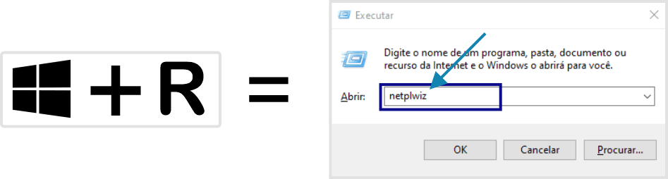

COMO CRIAR USUÁRIO LOCAL NO WINDOWS 10
Para os usuários de computadores que usam máquinas compartilhadas, já passaram por alguma situação constrangedora, como por exemplo: “Usa a máquina para trabalho e guarda todos seus trabalhos, seja de faculdade ou algum trabalho extra, freelance, enfim, qualquer tipo de trabalho que necessita de computador!"
Mas, o colega ou irmão usa a mesma máquina, e por algum motivo, seja proposital ou acidental, excluiu de vez seus arquivos, que estava salvo, fazendo com que você não recupere mais.
Situação como essa, creio que muitos já passaram, então vir resolver esse problema de vez para você.
Vamos criar um usuário local no Windows, onde cada pessoa que utiliza a mesma máquina irá ter um usuário, assim cada usuário irá ter um perfil, ou seja, uma área de trabalho.
Para isso, na máquina, necessita pelo menos um usuário administrador, esse dará permissão para todos usuários dessa máquina.
Existem, algumas opções de criar uma conta local, iremos usar a mais simples, para facilitar para você, então vamos lá:
- Para irmos até as configurações e criar um usuário, vamos pressionar a tecla Windows + R, irá abrir uma outra janela, chamada Executar, nela você digita o comando netplwiz, e dê ok, como mostra a imagem abaixo: 
- Após dá ok, irá abrir outra janela, Contas de Usuário, se sua máquina já tem outros usuários criados, além do usuário administrador, irá aparecer, no nosso caso, nossa máquina só tem um usuário administrador, com usuário e-mail, então, para criarmos nosso usuário, precisamos clicar em adicionar, como mostra a imagem abaixo:
- Agora, depois de adicionar, irá aparecer uma outra janela, “Como esta pessoa entrará? ”, vamos até embaixo, na opção “Entrar sem uma conta da Microsoft...” ao clicar, outro janela aparecerá, você clica em “Conta Local”, como mostra abaixo:
- Estamos quais concluindo a criação de um usuário, com essa nova janela, iremos adicionar nome de usuário e senha, como mostra a imagem a esquerda, após isso, a nova janela com usuário criado aparecerá, no nosso caso, criamos um usuário, chamado “INFORMÁTICA TESTE”. Pronto, agora só reiniciar a máquina e entrar com o novo usuário.
- Ao reiniciar a máquina, ira aparecer o usuário anterior e o novo usuário criado, no caso, criamos, “INFORMÁTICA TESTE”, basta você clicar nele e entrar com a senha criada anteriormente, como mostra a imagem abaixo:


Assuntos Relacionados